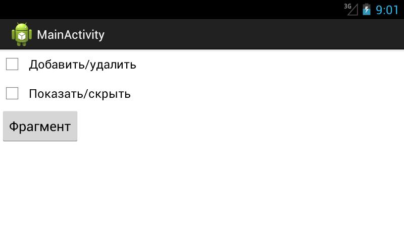
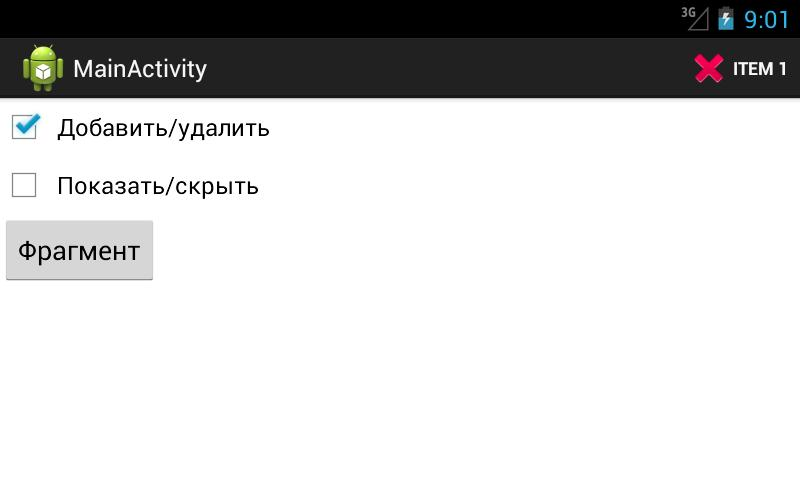
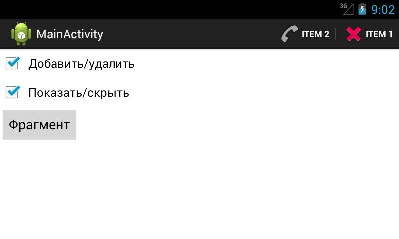
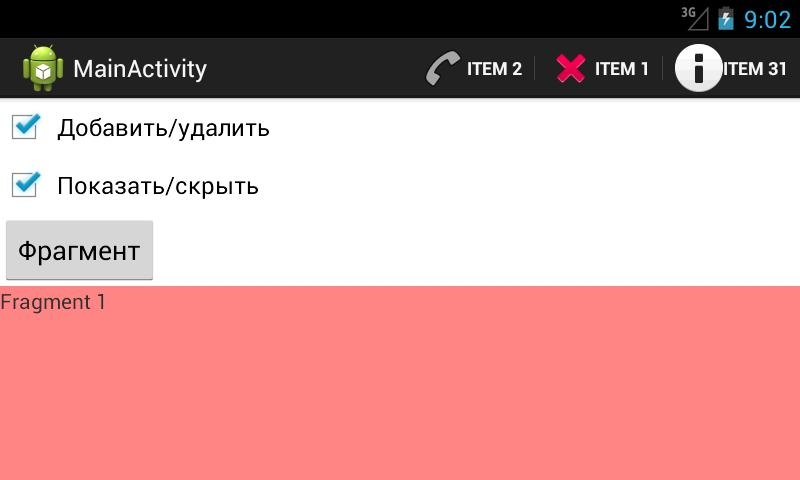
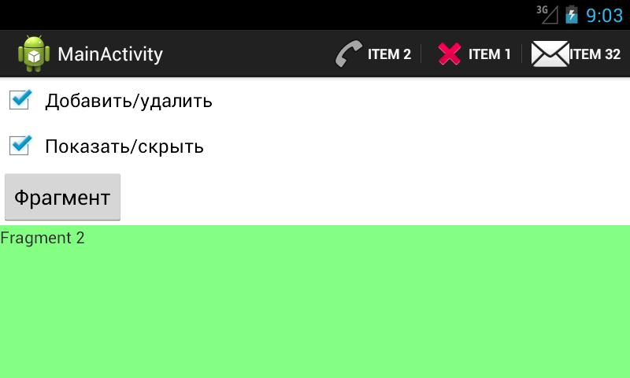

В этом уроке:
- программно размещаем элементы в ActionBar
- используем элементы из фрагментов
Недавно на форуме был вопрос о том, как во время работы программы менять содержимое ActionBar. Тема действительно интересная, и незаслуженно мною пропущенная. В этом уроке будем с ней разбираться.
Опробуем три способа работы с элементами:
1) Добавление/удаление MenuItem в объект Menu
2) Показ/скрытие группы в Menu
3) Элементы, относящиеся к фрагментам
С первыми двумя пунктами все понятно, эти механизмы мы рассматривали еще в Уроке 14.
Более интересен третий пункт. Фрагмент может реализовать в себе метод onCreateOptionsMenu и, тем самым, создать свои элементы для ActionBar. Как только фрагмент будет добавлен на экран, эти элементы добавятся в ActionBar. А когда фрагмент с экрана уберут, элементы исчезнут.
Создадим приложение, которое реализует три этих варианта.
Создадим проект:
Project name: P1121_DynamicActionBar
Build Target: Android 4.1
Application name: DynamicActionBar
Package name: ru.startandroid.develop.p1121dynamicactionbar
Create Activity: MainActivity
Добавим строки в strings.xml:
<string name="add_del">Добавить/удалить</string>
<string name="visible">Показать/скрыть</string>
<string name="fragment">Фрагмент</string>
<string name="frag1_text">Fragment 1</string>
<string name="frag2_text">Fragment 2</string>
<string name="menu_item1">Item 1</string>
<string name="menu_item2">Item 2</string>
<string name="menu_item31">Item 31</string>
<string name="menu_item32">Item 32</string>Создадим два фрагмента. Начнем с layout-файлов.
fragment1.xml:
<?xml version="1.0" encoding="utf-8"?>
<LinearLayout
xmlns:android="http://schemas.android.com/apk/res/android"
android:layout_width="match_parent"
android:layout_height="match_parent"
android:background="#77ff0000"
android:orientation="vertical">
<TextView
android:layout_width="wrap_content"
android:layout_height="wrap_content"
android:text="@string/frag1_text">
</TextView>
</LinearLayout>fragment2.xml:
<?xml version="1.0" encoding="utf-8"?>
<LinearLayout
xmlns:android="http://schemas.android.com/apk/res/android"
android:layout_width="match_parent"
android:layout_height="match_parent"
android:background="#7700ff00"
android:orientation="vertical">
<TextView
android:layout_width="wrap_content"
android:layout_height="wrap_content"
android:text="@string/frag2_text">
</TextView>
</LinearLayout>Файлы с пунктами меню (они же - элементы ActionBar):
res/menu/fragment1.xml:
<?xml version="1.0" encoding="utf-8"?>
<menu
xmlns:android="http://schemas.android.com/apk/res/android">
<item
android:id="@+id/frag1_item"
android:icon="@android:drawable/ic_dialog_info"
android:showAsAction="ifRoom|withText"
android:title="@string/menu_item31">
</item>
</menu>res/menu/fragment2.xml:
<?xml version="1.0" encoding="utf-8"?>
<menu
xmlns:android="http://schemas.android.com/apk/res/android">
<item
android:id="@+id/frag2_item"
android:icon="@android:drawable/ic_dialog_email"
android:showAsAction="ifRoom|withText"
android:title="@string/menu_item32">
</item>
</menu>По одному элементу для каждого фрагмента. Эти элементы будут появляться в ActionBar при выводе фрагмента на экран.
Классы.
Fragment1.java:
package ru.startandroid.develop.p1121dynamicactionbar;
import android.app.Fragment;
import android.os.Bundle;
import android.view.LayoutInflater;
import android.view.Menu;
import android.view.MenuInflater;
import android.view.View;
import android.view.ViewGroup;
public class Fragment1 extends Fragment {
public void onCreate(Bundle savedInstanceState) {
setHasOptionsMenu(true);
super.onCreate(savedInstanceState);
}
public View onCreateView(LayoutInflater inflater, ViewGroup container,
Bundle savedInstanceState) {
return inflater.inflate(R.layout.fragment1, null);
}
public void onCreateOptionsMenu(Menu menu, MenuInflater inflater) {
inflater.inflate(R.menu.fragment1, menu);
super.onCreateOptionsMenu(menu, inflater);
}
}Fragment2.java:
package ru.startandroid.develop.p1121dynamicactionbar;
import android.app.Fragment;
import android.os.Bundle;
import android.view.LayoutInflater;
import android.view.Menu;
import android.view.MenuInflater;
import android.view.View;
import android.view.ViewGroup;
public class Fragment2 extends Fragment {
public void onCreate(Bundle savedInstanceState) {
setHasOptionsMenu(true);
super.onCreate(savedInstanceState);
}
public View onCreateView(LayoutInflater inflater, ViewGroup container,
Bundle savedInstanceState) {
return inflater.inflate(R.layout.fragment2, null);
}
public void onCreateOptionsMenu(Menu menu, MenuInflater inflater) {
inflater.inflate(R.menu.fragment2, menu);
super.onCreateOptionsMenu(menu, inflater);
}
}В onCreate с помощью setHasOptionsMenu включаем режим вывода элементов фрагмента в ActionBar.
В onCreateView создаем View, в onCreateOptionsMenu – меню. Все как обычно.
Фрагменты готовы.
Теперь займемся Activity. Перепишем res/layout/main.xml:
<?xml version="1.0" encoding="utf-8"?>
<LinearLayout
xmlns:android="http://schemas.android.com/apk/res/android"
xmlns:tools="http://schemas.android.com/tools"
android:id="@+id/LinearLayout1"
android:layout_width="match_parent"
android:layout_height="match_parent"
android:orientation="vertical">
<CheckBox
android:id="@+id/chbAddDel"
android:layout_width="wrap_content"
android:layout_height="wrap_content"
android:onClick="onClick"
android:text="@string/add_del">
</CheckBox>
<CheckBox
android:id="@+id/chbVisible"
android:layout_width="wrap_content"
android:layout_height="wrap_content"
android:onClick="onClick"
android:text="@string/visible">
</CheckBox>
<Button
android:id="@+id/btnFrag"
android:layout_width="wrap_content"
android:layout_height="wrap_content"
android:onClick="onClick"
android:text="@string/fragment">
</Button>
<FrameLayout
android:id="@+id/cont"
android:layout_width="match_parent"
android:layout_height="match_parent">
</FrameLayout>
</LinearLayout>Два чекбокса и кнопка. Чекбоксы отвечают за работу с элементами с помощью первого и второго способов. Кнопка будет показывать поочередно два фрагмента в контейнере cont.
res/menu/main.xml:
<?xml version="1.0" encoding="utf-8"?>
<menu
xmlns:android="http://schemas.android.com/apk/res/android">
<group
android:id="@+id/groupVsbl">
<item
android:id="@+id/item2"
android:icon="@android:drawable/ic_menu_call"
android:showAsAction="always|withText"
android:title="@string/menu_item2">
</item>
</group>
</menu>Создаем группу, а в ней элемент. Эту группу будем скрывать и показывать.
MainActivity.java:
package ru.startandroid.develop.p1121dynamicactionbar;
import android.app.Activity;
import android.app.Fragment;
import android.os.Bundle;
import android.view.Menu;
import android.view.MenuItem;
import android.view.View;
import android.widget.CheckBox;
public class MainActivity extends Activity {
final int MENU_ID = 1;
CheckBox chbAddDel;
CheckBox chbVisible;
Fragment frag1;
Fragment frag2;
Fragment frag;
@Override
public void onCreate(Bundle savedInstanceState) {
super.onCreate(savedInstanceState);
setContentView(R.layout.main);
chbAddDel = (CheckBox) findViewById(R.id.chbAddDel);
chbVisible = (CheckBox) findViewById(R.id.chbVisible);
frag = frag1 = new Fragment1();
frag2 = new Fragment2();
}
@Override
public boolean onCreateOptionsMenu(Menu menu) {
getMenuInflater().inflate(R.menu.main, menu);
menu.setGroupVisible(R.id.groupVsbl, chbVisible.isChecked());
if (chbAddDel.isChecked()) {
menu.add(0, MENU_ID, 0, R.string.menu_item1)
.setIcon(android.R.drawable.ic_delete)
.setShowAsAction(
MenuItem.SHOW_AS_ACTION_ALWAYS
| MenuItem.SHOW_AS_ACTION_WITH_TEXT);
} else {
menu.removeItem(MENU_ID);
}
return true;
}
public void onClick(View view) {
switch (view.getId()) {
case R.id.chbAddDel:
case R.id.chbVisible:
invalidateOptionsMenu();
break;
case R.id.btnFrag:
frag = (frag == frag1) ? frag2 : frag1;
getFragmentManager().beginTransaction().replace(R.id.cont, frag)
.commit();
break;
default:
break;
}
}
}В onCreateOptionsMenu настраиваем видимость группы groupVsbl в зависимости от значения чекбокса chbVisible.
В зависимости от значения чекбокса chbAddDel создаем или удаляем элемент.
В onСlick для чекбоксов вызываем метод invalidateOptionsMenu - перерисовка меню/ActionBar. А по нажатию на кнопку поочередно выводим на экран Fragment1 или Fragment2.
Все сохраняем и запускаем приложение.

Жмем галку Добавить/удалить. Появляется элемент. Мы добавили MenuItem в Menu.

Жмем галку Показать/скрыть. Появляется элемент. Мы показали группу меню, в которой один пункт.

Соответственно, убирая галки - убираете элементы.
Понажимаем кнопку Фрагмент. Появляется элемент то одного, то другого фрагмента.


Еще, как вариант, можно играться с видимостью не всей группы, а конкретного элемента - метод setVisible.
Если в ActionBar нажать на overflow-кнопку, будет вызван метод onPrepareOptionsMenu для Activity и для фрагмента, который сейчас отображен.